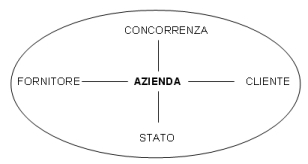
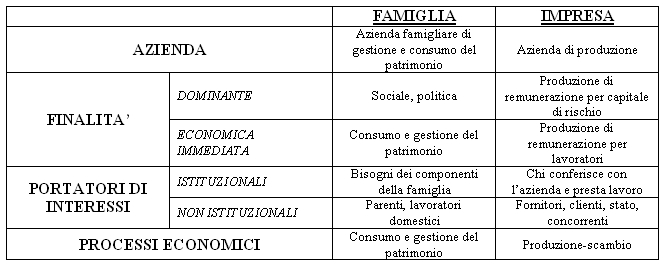
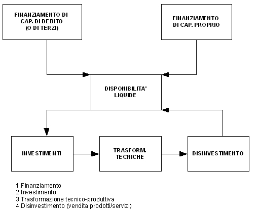
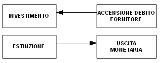
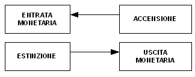
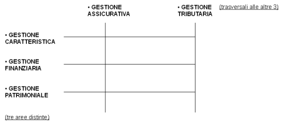
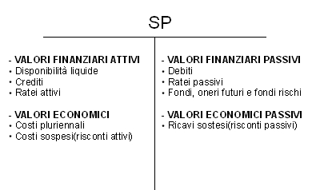

Torna alla pagina di Economia ed Organizzazione Aziendale
:: Economia ed Organizzazione Aziendale ::
NOTA: Questa pagina vuole essere un riassunto discorsivo del corso di Economia, contenente i concetti fondamentali e principali. Si ringrazia ALESSIA MAURI(grazie stela) per il materiale fornito e per la disponibilità.
Nozione di Azienda
Codice Civile: complesso di beni organizzati dall'imprenditore per l'esercizio dell'attività di impresa.
Si tratta quindi, di una organizzazione economica all'interno della quale si sfornano attività complesse che consistono nella trasformazione di beni produttivi. Ogni istituzione svolge delle attività economiche e quindi dispone di una particolare azienda. Per l'istituzione famiglia esiste l'azienda famigliare di gestione e consumo del patrimonio; per l'impresa esiste l'azienda di produzione; lo stato dispone di aziende pubbliche composte(regioni, province e comuni ne dispongono...); infine l'istituto no profit dispone di aziende no profit.
In generale, il fine dell'azienda è soddisfare uno o più bisogni umani, bisogni che cambiano da azienda ad azienda(cioè il fine economico immediato). Il mezzo con cui si realizza il fine è l'attività economica, che consiste in 3 tipi di operazioni: produzione, scambio e consumo.
L'azienda è un sistema che opera in un contesto socio-economico complesso, dinamico e aperto:

Trattandosi di un sistema, ogni componente interagisce e influenza, direttamente o indirettamente, gli altri organi del sistema.
Principali differenze tra istituto impresa ed istituto famiglia

Il fine generale e il mezzo nell'istituto impresa
Codice Civile: Attività economica professionalmente organizzata al fine della produzione o dello scambio di beni o di servizi.
Gli elementi che caratterizzano l'istituto impresa sono un'organizzazione stabile, dei beni economici(quindi un patrimonio), delle persone che partecipano all'impresa fornendo servizi, delle attività da svolgere ed un fine che consiste nella produzione di remunerazione e ,più generalmente, nella soddisfazione di bisogni umani di vario genere.
Soggetto giuridico e soggetto economico
L'impresa può essere esercitata da una persona fisica e da una persona giuridica.
Si parla di impresa individuale quando il soggetto giuridico è una persona fisica che risponde coi propri beni di un'eventuale mancanza dell'impresa. Quindi il rischio economico, nel caso dell'impresa individuale, grava interamente sull'imprenditore, che detiene però interamente anche il potere di gestire le attività strategiche e operative.
Se l'impresa è esercitata da una persona giuridica assume invece una veste societaria, che può essere di varia natura:
1. Società di persone, dove i soci detengono potere giuridico ed economico; per quanto riguarda il rischio economico il patrimonio della società non è perfettamente distinto da quello dei soci per cui i creditori possono rivalersi(se il patrimonio societario è insufficiente) sui beni dei soci.
I soci amministrano congiuntamente le attività strategiche e operative.
2. Società di capitali, in questo caso i creditori non possono rivalersi sui beni dei soci. Le forme riconosciute sono: SPA, SRL, e Società in accomandita per azioni.
Riassumendo:
- IMPRESA INDIVIDUALE → soggetto giuridico corrisponde ad una persona fisica che coincide col soggetto economico
- SOCIETA' DI PERSONE → un soggetto giuridico e tanti soggetti economici quanti sono i soci
- SOCIETA' DI CAPITALI → un soggetto giuridico, soggetto economico corrisponde al governo di amministrazione
I collaboratori dell'imprenditore
I collaboratori dell'imprenditore possono essere autonomi o dipendenti.
I collaboratori autonomi possono essere: consulenti, professionisti che offrono attività temporanee(ingegneri, architetti, commercialisti...), ausiliari del commercio(agenti, rappresentanti...).
I lavoratori dipendenti possono essere invece: dirigenti, quadri, impiegati, operai...
I lavoratori autonomi sono sempre più in aumento. Essi, a differenza dei dipendenti, posseggono una partita IVA, quindi sono riconosciuti a loro volta come imprenditori, lavorano "a parità" con gli altri imprenditori e non sono soggetti a vincoli di subordinazione.
I cicli aziendali
I cicli aziendali permettono di comprendere più distintamente le logiche di funzionamento dell'economia. Prima di tutto occorre tenere presente le operazioni di gestione del sistema aziendale:

Una volta chiarito il ciclo di funzionamento aziendale, si tengano presenti i tre concetti base della gestione, ovvero:
1. l'aspetto tecnico che non tratta elementi economici, se non in termini di efficienza e analisi dei costi, ma si concentra sulla combinazione dei fattori produttivi e sull'aggiunta di valore.
2. l'aspetto economico che tratta costi e ricavi, i quali, rispettivamente, si sostengono al momento dell'acquisto(investimento) e della vendita(disinvestimento).
3. l'aspetto finanziario che tratta crediti e entrate monetarie, debiti e uscite monetarie.
I debiti consistono in "promesse" di assolvere un pagamento, mentre i crediti sono la prova che qualcuno deve pagarci(sono le due facce della stessa medaglia). I movimenti monetari consistono nel momento in cui la promessa viene effettivamente assolta. In questo senso l'aspetto finanziario misura l'aspetto economico.
Veniamo quindi ai cicli aziendali, sono quattro: tecnico, economico, finanziario e monetario.
Il ciclo tecnico inizia con la lavorazione delle materie prime e termina con la realizzazione del prodotto.
Il ciclo economico inizia col sostenimento dei costi(per esempio acquisto di materie prime) e termina con la realizzazione dei ricavi(per esempio la vendita del prodotto finito).
Il ciclo finanziario inizia con la contrazione del debito(per esempio il debito di funzionamento contratto dal fornitore al momento dell'acquisto di materie prime) e termina con la concessione del credito(che corrisponde per esempio allo sfasamento temporale che intercorre tra l'emissione della fattura al cliente ed il pagamento).
Infine il ciclo monetario inizia con l'uscita monetaria e finisce con l'entrata monetaria(per esempio dal momento in cui pago M.P. al momento in cui paga il cliente).
Nozione di economicità
L'economicità di un'azienda consiste nella capacità di massimizzare l'utilità delle risorse impiegate e dipende dalle performance aziendali e dal rispetto delle condizioni di equilibrio che consentono il funzionamento delle aziende. Le performance aziendali sono ottimali quando sono efficaci, ovvero capaci di perseguire le finalità istituzionali (e non) dell'azienda, e efficienti, ovvero capaci di impiegare razionalmente le risorse (quando c'è congruità tra compenso e contributo).
Le condizioni di equilibrio dell'azienda sono invece:
- e.economico: soddisfatto se i ricavi sono maggiori dei costi(quindi se si ha un utile e non una perdita).
- e.patrimoniale: concettualmente coincide con l'accumulo e il mantenimento del patrimonio, è verificato quando il rapporto tra capitale proprio e capitale di terzi(o di debito) è equilibrato e quando l'attivo circolante è maggiore delle immobilizzazioni.
- e.finanziario: è verificato quando c'è un bilanciamento tra finanziamenti e impieghi (nel lungo periodo).
- e.monetario: è verificato quando l'azienda è in grado di far fronte ai pagamenti(nel breve periodo).
Finanziamenti
Esistono due tipi di finanziamenti: i finanziamenti esterni e quelli interni.
Quelli più frequenti sono gli esterni, che possono essere di capitale proprio o di capitale di terzi, il quale a sua volta può consistere in debito di funzionamento e debito di finanziamento. Entrambi sono situati nella parte delle fonti, nella situazione patrimoniale. Per quanto riguarda il finanziamento esterno di capitale proprio, esso è un apporto del proprietario o dei soci (in base al tipo di azienda), fornito alla costituzione dell'impresa e in qualunque altro momento e può essere costituito sia da conferimenti in natura che da apporti in denaro. Il finanziamento di capitale proprio non esige né l'obbligo di restituzione entro scadenza né l'obbligo di remunerazione, ed è partecipe del "rischio economico".
Il finanziamento esterno di capitale di terzi può essere di due tipi:
DEBITO DI FUNZIONAMENTO

DEBITO DI FINANZIAMENTO

I finanziamenti interni sono una risorsa delicata. Essi non sono immediatamente percepibili e non sono a disposizione del proprietario o dei soci. Esso è un autofinanziamento, ovvero un utile di esercizio non distribuito, ma messo a servizio del processo produttivo. In questo caso si parla di autofinanziamento proprio, poi c'è anche quello improprio, che consiste negli ammortamenti.
Investimenti e Disinvestimenti
Gli investimenti consistono nell'acquisto di beni o servizi oppure in fattori produttivi. In quest'ultimo caso abbiamo due flussi: uno in entrata, ed è quello reale, ed uno in uscita, ed è quello finanziario.
Per esempio, se investo in beni strumentali mi occorrono le fonti, per esempio un debito bancario, che mi permettano di attivare il flusso concreto di beni in entrata.
I disinvestimenti, viceversa, consistono nella vendita di prodotti, quindi ci sarà un flusso reale in uscita e un flusso finanziario in entrata.
Per esempio vendita a clienti con dilazione di pagamento.
Combinazioni economiche generali
- definizione dell'assetto d'istituto
- rilevazioni: sistemi informativi, contabilità industriale, contabilità generale, sistemi per il bilancio
- organizzazione
- gestione:

Relazione tra finanziamenti e investimenti
In base alla tipologia e alla durata degli impieghi, si cerca un certo finanziamento: l'investimento a lungo termine(>5 anni) è auspicabile per impieghi come fabbricati, macchinari e terreni e come fonti rientreranno nel C.P. o nei D. a lungo termine. L'investimento a medio termine(1/5) è auspicabile per impieghi come automezzi, arredi e brevetti e come fonti rientrerà nel C.P. o nei D. a medio termine. L'investimento a breve termine(<1) come fonti rientrerà nel C.P. o nei debiti a breve termine(dilazioni di pagamento).
Relazione di base nei valori impieghi-fondi
A = P + Pn
- A = Pn P=0 alla costituzione
- A > Pn situazione normale
- A < P situazione patologica, liquidazione forzata
Aspetti economici della gestione
Sono due: finanziario ed economico.
Le uscite monetarie o debiti misurano i costi di investimento: pluriennali, per acquisto, del lavoro, per servizi, finanziari, tributari.
Le entrate monetarie o crediti misurano: ricavi per vendite, ricavi finanziari, altri proventi, plusvalenze che derivano da dismissione di beni strumentali.
La stessa presenza dei due componenti si riscontra nella situazione patrimoniale:

Fondi rischi e oneri
Si tratta di una categoria in cui vengono inseriti valori finanziari presunti, nel rispetto del principio di prudenza. Un valore è definito come presunto qualora sia incerto l'ammontare, il tempo o il manifestarsi. Nella situazione patrimoniale questi accantonamenti vengono inseriti nella voce apposita, chiamata fondi rischi e oneri. Essa è suddivisa in:
- fondo per trattamento di quiescenza e obblighi simili, che consistono in fondi di trattamento del personale come fondi pensione sostitutivi o integrativi del trattamento previdenziale INPS.
- fondo per imposte, che comprende accantonamenti effettuati in vista di debiti tributari probabili o di ammontare indeterminato.
- altri fondi. Ad esempio fondo rischi su cambi che esprime il rischio connesso a transazioni di valuta.
Le scritture di assestamento → completamento
Le scritture di completamento sono scomponibili in cinque categorie:
- quella degli INTERESSI. Se sono passivi, vanno nelle fonti della situazione patrimoniale e nei costi del conto economico, viceversa, se sono interessi attivi vanno inseriti negli impieghi della situazione patrimoniale e nei ricavi del conto economico. La mora è una sorta di interesse passivo, va inserita nella situazione patrimoniale sommata al debito di cui fa parte e nel conto economico da sola. La stessa cosa vale per i tassi.
- quella delle PERDITE SU CLIENTI. Essa, nella situazione patrimoniale è rilevabile solo attraverso una riduzione dei crediti verso clienti, mentre l'entità vera e propria della perdita viene espressa dai costi del conto economico.
- QUOTA DI ACCANTONAMENTO DEL TFR di competenza dell'esercizio.
- FATTURE DA RICEVERE. Si misurano con l'aumento dei debiti.
- FATTURE DA EMETTERE. Si misurano con l'aumento dei crediti.
Le immobilizzazioni
Le immobilizzazioni sono beni ad utilità ripetuta con dei costi fissi. Le immobilizzazioni possono essere immateriali, materiali e finanziarie.
Le immobilizzazioni immateriali sono: costi di impianto e di ampliamento, costi di ricerca di sviluppo e di pubblicità, diritti di brevetto industriale e di utilizzazione delle opere dell'ingegno, concessioni licenze marchi e diritti simili, avviamento, immobilizzazioni in corso(ancora in fase di realizzazione) e acconti(anticipo ai fornitori).
Le immobilizzazioni materiali sono: terreni e fabbricati, impianti e macchinari, attrezzature industriali e commerciali, immobilizzazioni in corso ed acconti. Esse possono anche essere divise secondo un criterio di proprietà del bene(costruzioni economiche, apporti, acquisti da terzi) o di godimento(locazioni finanziarie-leasing, locazioni). In particolare, le costruzioni economiche sono dei beni costruiti interamente utilizzando risorse proprie dell'impresa. Nella contabilità vengono inserite nelle immobilizzazioni in corso della situazione patrimoniale e dei ricavi del conto economico.
Le immobilizzazioni finanziarie sono: partecipazioni in imprese, crediti a medio|lungo termine di natura finanziaria e azioni proprie(buy back: implicano una riserva di pari importo).
Ammortamento
L'ammortamento è un procedimento tecnico contabile il cui scopo è quello di ripartire sugli esercizi di competenza un costo pluriennale. Le quote di ammortamento imputate a ogni singolo esercizio in funzione della vita utile del cespite vengono accantonate in un fondo(fondo ammortamento, appunto) che rappresenta l'ammortamento accumulato, dalla data di utilizzo del bene, da portare in detrazione dal costo storico.
Leasing finanziario
Il leasing finanziario è un contratto atipico, nel senso che non è disciplinato dall'ordinamento giuridico(tra società di leasing e società di produzione però, c'è un regolare contratto di acquisto). Sono tre i soggetti:
la società di leasing, la società produttrice del bene oggetto del contratto e la società che usufruirà del bene.
Tra la società utilizzatrice e la società di leasing si stipula un contratto che sancisce i termini di pagamento(maxicanone, canoni, riscatto), la società di leasing quindi acquista il diritto di proprietà del bene dalla società di produzione(che può realizzare il prodotto su ordinazione o averlo in catalogo), la quale consegna il bene alla società utilizzatrice. Quindi nella forma è un contratto di locazione, ma nella sostanza è un finanziamento a medio-lungo termine tra la società di leasing e la società utilizzatrice.
Dal punto di vista contabile, nella situazione patrimoniale si tiene nelle immobilizzazioni una sorta di fondo di ammortamento del leasing a cui si toglie al valore di contratto la quota pagata nell'esercizio di competenza. Nel conto economico, tra i costi, vanno invece segnalati i canoni di competenza economica che corrispondono al canone mensile di competenza moltiplicato per il numero di mesi da cui vige il leasing in quell'esercizio. Infine, si inseriscono i risconti attivi nello stato patrimoniale, che corrispondono alla somma dei canoni pagati nell'esercizio meno i canoni di competenza economica.
Manutenzione programmata
I beni pluriennali richiedono manutenzioni programmate. I costi imputati ad essa vengono ripartiti per la durata per cui è valida. Dal punto di vista contabile, essi risultano come costi nel conto economico e si accumulano, di esercizio in esercizio in una sottovoce del fondo oneri futuri.
Dismissione di beni strumentali
Esaurita la loro funzione produttiva, i beni strumentali vengono dismessi ed estromessi dal processo produttivo.
L'eliminazione del bene strumentale può verificarsi per alienazione o per distruzione.
Nel caso di alienazione, il bene verrà venduto a terzi, permutato o assegnato ai soci. Il valore contabile del bene consiste nel costo storico meno il fondo ammortamento. Il ricavo ottenuto dall'alienazione meno il valore contabile del bene fornisce una plusvalenza(v.positivo) o minusvalenza(v.negativo). Si tratta di componenti del reddito che possono essere ordinarie o straordinarie a seconda che la vendita avvenga quando i beni hanno fisiologicamente esaurito la loro utilità per l'impresa oppure, i beni vengono sostituiti o eliminati in seguito a riconversioni o ristrutturazioni produttive o per la riduzione delle dimensioni aziendali.
Le rimanenze dell'attivo circolante
Esse non sono altro che le scorte presenti in magazzino. Le tecniche contabili con cui si rilevano le rimanenze sono: i carichi, che consistono nella merce che entra in magazzino da fornitori, semilavorati o prodotti finiti interni; gli scarichi, che, invece, consistono nella merce che entra nel mercato e nei semilavorati che entrano nel ciclo produttivo.
Le tecniche di valorizzazione delle scorte sono le seguenti:
- costo effettivo: consiste nel riuscire a quantificare il valore effettivo delle merci in magazzino, ma è una circostanza riservata a particolari prodotti(ad esempio articoli di lusso, opere d'arte, una ferrari).
- costo medio ponderato: consiste nella valorizzazione dei beni in magazzino attraverso un valore medio pesato sul valore delle merci in uscita; ad esempio, se ho una scorta in quantità di 2100 e l'importo è di 65000, per trovare il costo è sufficiente dividere l'importo per la quantità → 31.
- metodo LIFO: il nome stà per l'acronimo inglese "last in first out" e si basa sull'ipotesi che le ultime merci entrate in magazzino saranno le prime ad essere prelevate. In questo modo gli scarichi si valorizzano al prezzo delle ultime merci entrate e quello che rimane si valorizza utilizzando i prezzi delle merci più vecchie.
- metodo FIFO: basato su un altro acronimo che sta per "first in first out" e si basa sull'ipotesi che le merci entrate per prime sono le prime ad uscire. In questo modo gli scarichi si valorizzano ai prezzi delle prime merci entrate e le scorte si valorizzano ai prezzi più recenti.
Torna alla pagina di Economia ed Organizzazione Aziendale